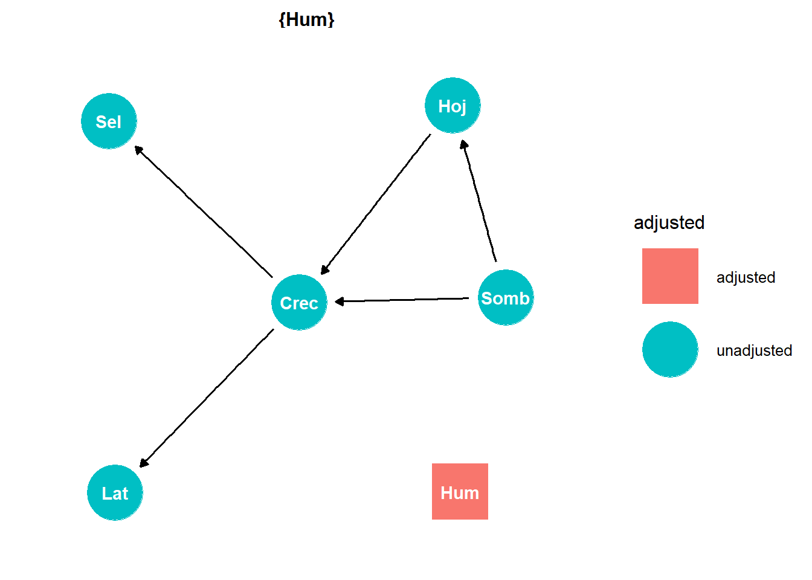

En un DAG, cada tipo de nodo tiene un significado específico que surge de los intereses de la investigación. A partir de esa información derivamos perspectivas específicas sobre la forma como se expresan los patrones de correlación y sobre la credibilidad de las relaciones causales propuestas. Conviene distinguir entre la o las variables de interés, que se propone responden según lo que hagamos con otro conjunto de variables de nuestro interés que podemos asociar con tratamientos o exposición. Desde luego hay algunas otra variables importantes que podemos reconocer en el sistema de nuestro interés, pero que más bien tienen un papel que nos interesa eliminar, control o simplemente reconocer que aunque importante, no la podemos observar. Esto ayuda a ampliar la capacidad expresiva del DAG, y al mismo tiempo no ayuda a clarificar acciones de “diseño del estudio” que habremos de poner en práctica.
Definiciones clave en un DAG
Término
Definición
Ejemplo práctico
Exposure
Variable de exposición. Es la causa principal bajo la hipótesis y los objetivos del estudio. Define o forma parte de lo que en algunos contextos se denomina tratamiento.
Sombra del dosel arbóreo.
Outcome
Variable de resultado (respuesta). Es el efecto que, de acuerdo con la hipótesis del estudio, resulta de exponer a las unidades experimentales a la variable de exposición.
Crecimiento de plantas del sotobosque.
Adjusted
Variables que se incluyen en el modelo para controlar procesos o situaciones de confusión de los efectos. Se opta por incluirlos en el modelo estadístico para evitar que afecten la estimación de la exposición sobre el resultado.
Humedad del suelo.
Selected
Variables que en el contexto del sistema de estudio representan un sesgo de selección (colicionador) . Dan cuenta de las situaciones en las que la muestra o población está condicionada por criterios que pueden distorsionar las relaciones causales.
Solo medir plantas en claros accesibles, lo que excluye parcelas más profundas del bosque.
Unobserved (Latent)
Variables no medidas, ocultas o latentes que se postula podrían existir e influir en la relación causal, pero que no están disponibles en los datos.
Presencia de micorrizas en el suelo que no se midieron, pero que influyen en el crecimiento.
Modalidades de estimación de efectos en un estudio
En un DAG, el efecto total) se refiere al impacto combinado que una variable de exposición tiene sobre un resultado, incluyendo tanto el efecto directo como todos los efectos indirectos que pasan a través de mediadores. Dicho de otra forma: es la suma del efecto directo y de los efectos transmitidos por las rutas intermedias, todos combinados.
Tipo de efecto
Definición
Ejemplo práctico (ecología)
Total effect
El impacto global de la exposición sobre el resultado, considerando todas las rutas (directas e indirectas).
Sombra del dosel → crecimiento reducido de plantas (directo) + sombra → más hojarasca → cambios en nutrientes → crecimiento reducido (indirecto).
Direct effect
El impacto de la exposición sobre el resultado que no pasa por mediadores.
Sombra → menor fotosíntesis → crecimiento reducido.
Indirect effect
El impacto que se transmite a través de una o más variables mediadoras.
Sombra → acumulación de hojarasca → alteración de nutrientes → crecimiento reducido.
Cómo se interpretan las estimaciones de efectos
Incluye todas las rutas causales: tanto las que van directamente de la exposición al resultado como las que pasan por mediadores.
No se ajusta por mediadores: si se ajusta por mediadores, se elimina parte del efecto indirecto y se estima solo el efecto directo.
Es útil para preguntas de manejo ecológico o conservación: por ejemplo, si queremos saber el impacto global de abrir claros en el bosque sobre el crecimiento del sotobosque, necesitamos el total effect.
En ecología, un triángulo de confusión aparece cuando una variable externa afecta tanto al factor de exposición como al resultado, generando un sesgo. En este ejemplo la humedad influye en:
la densidad del dosel (más humedad favorece mayor cobertura).
El crecimiento de las plantas (más agua provoca mayor productividad).
Pregunta: ¿La sombra reduce el crecimiento de plantas?
Problema: La humedad también afecta sombra y crecimiento.
¿Debería?: Ajustar por humedad en el modelo o controlar humedad en el diseño experimental.
¿Qué ganaría?: Una estimación más válida del efecto causal de la sombra.
Implicaciones
Sesgo en la estimación:
Si no controlas la humedad, el efecto estimado de la sombra sobre el crecimiento estará mezclado con el efecto de la humedad.
Camino falso:
La humedad abre un camino alternativo entre sombra y crecimiento que no es causal, sino confusor.
Interpretación incorrecta:
Podrías concluir que la sombra tiene un efecto más fuerte (o más débil) de lo que realmente tiene, porque parte del efecto proviene de la humedad.
Code
# Asignar roles y marcar el triángulo de confusiónroles <-tibble(name =c("Somb", "Crec", "Hum", "Hoj", "Sel", "Lat"),rol =c("Exposición", "Resultado", "Confusor", "Mediador", "Seleccionada", "Latente"), conf_triangle =c("Dentro", "Dentro", "Dentro", "Fuera", "Fuera", "Fuera") )# Graficar con colores diferenciadosdag_ecologia %>%tidy_dagitty() %>%left_join(roles, by ="name") %>%ggplot(aes(x = x, y = y, xend = xend, yend = yend)) +geom_dag_edges() +geom_dag_point(aes(fill = conf_triangle, shape = rol),color ="black", size =20 ) +geom_dag_text(color ="black", size =4) +scale_fill_manual(values =c("Dentro"="red", # nodos del triángulo de confusión"Fuera"="grey70"),name ="¿Triángulo?") +# otros nodosscale_shape_manual(values =c("Exposición"=22, # cuadrado"Resultado"=21, # óvalo"Confusor"=23, # rombo"Mediador"=24, # triángulo"Seleccionada"=25, # cuadrado"Latente"=21), # óvaloname ="Rol de la variable") +guides( fill =guide_legend(override.aes =list(size =5,color =c("red", "grey70"))), shape =guide_legend(override.aes =list(size =5, fill =c("red", "red", "red", "grey70", "grey70", "grey70")))) +theme_dag() +ggtitle("Triángulo de confusión") +theme(plot.title =element_text(hjust =0.5))
Podemos explorar este sistema ecológico con dagitty y también recurriendo a ensayos por simulación.
Le podemos pedir a dagitty que nos identifique el conjunto de variables que deberíamos controlar para lograr una estimación de efectos entre exposure y outcome. Lo hacemos así.
Code
adjustmentSets(dag_ecologia)
{ Hum }
Podemos ver con ayuda gráfica de la biblioteca ggdag (integra dagitty con ggplot2) , el patrón de interés cuando nos interesa la relación entre sombra y crecimiento.
Code
ggdag_adjustment_set(dag_ecologia) +theme_dag()

Ahora, hagamos una simulación de la situación descrita. Empezamos por construir el patrón en los datos, de acuerdo con la misma proposición causal que hemos capturado en el DAG
Code
set.seed(1234)# Número de observacionesn <-500# Variable confusora: HumedadHum <-rnorm(n, mean =1, sd =1)# Exposición: Sombra, influida por HumedadSomb <-0.7* Hum +rnorm(n, mean =1, sd =1)# Mediador: Hojarasca, influida por Sombra Hoj <-0.5* Somb +rnorm(n, mean =1, sd =1)# Resultado: Crecimiento, influido por Sombra, Humedad y HojarascaCrec <--0.8* Somb +0.6* Hum -0.4* Hoj +rnorm(n, mean =1, sd =1)
De acuerdo con estos datos, tenemos un efecto directo del sombreado (el esperado simulado es de 0.8 unidades). Además deberíamos poder obtener una estimación del efecto total asociado con la sombra que sería:
Primero el caso equivocado se intentar estimar directamente el efecto del sombreado. Está equivocado pues existe el efecto de confusión o sesgo que no se ha controlado. No produce una buena estimación ni del efecto directo ni del total.
Code
# Modelo sin ajustar por Humedad (sesgado)modelo_sesgado <-lm(Crec ~ Somb)summary(modelo_sesgado)
Call:
lm(formula = Crec ~ Somb)
Residuals:
Min 1Q Median 3Q Max
-4.0031 -0.7444 0.0478 0.8406 3.8122
Coefficients:
Estimate Std. Error t value Pr(>|t|)
(Intercept) 0.64245 0.08672 7.408 5.51e-13 ***
Somb -0.66997 0.04199 -15.954 < 2e-16 ***
---
Signif. codes: 0 '***' 0.001 '**' 0.01 '*' 0.05 '.' 0.1 ' ' 1
Residual standard error: 1.171 on 498 degrees of freedom
Multiple R-squared: 0.3382, Adjusted R-squared: 0.3369
F-statistic: 254.5 on 1 and 498 DF, p-value: < 2.2e-16
Ahora hacemos lo que el DAG nos sugiere es la forma apropiada de obtener el estimador del efecto total. Controlamos el la ruta que está provocando confusión a través del papel de la humedad en el sistema.
Code
# Modelo ajustado por Humedad (controla confusión), efecto total modelo_ajustado_hum <-lm(Crec ~ Somb + Hum)summary(modelo_ajustado_hum )
Call:
lm(formula = Crec ~ Somb + Hum)
Residuals:
Min 1Q Median 3Q Max
-3.7135 -0.7480 0.0272 0.7317 3.2349
Coefficients:
Estimate Std. Error t value Pr(>|t|)
(Intercept) 0.57712 0.08141 7.089 4.66e-12 ***
Somb -0.95201 0.05127 -18.570 < 2e-16 ***
Hum 0.52867 0.06183 8.551 < 2e-16 ***
---
Signif. codes: 0 '***' 0.001 '**' 0.01 '*' 0.05 '.' 0.1 ' ' 1
Residual standard error: 1.094 on 497 degrees of freedom
Multiple R-squared: 0.4231, Adjusted R-squared: 0.4208
F-statistic: 182.3 on 2 and 497 DF, p-value: < 2.2e-16
El efecto total asociado a sombreado resulta bastante cercano al que esperaríamos: -1.
Si separamos el efecto de la hojarasca, agregando esa variable en el modelo, entonces obtenemos un estimador del efecto directo atribuible al sombreado. El esperado de esto es: -0.8 unidades.
Code
# Modelo ajustado por Humedad y hojarasca efecto directomodelo_ajustado_hum_hoj <-lm(Crec ~ Somb + Hum + Hoj)summary(modelo_ajustado_hum_hoj)
Call:
lm(formula = Crec ~ Somb + Hum + Hoj)
Residuals:
Min 1Q Median 3Q Max
-3.1290 -0.6768 -0.0315 0.6567 3.0834
Coefficients:
Estimate Std. Error t value Pr(>|t|)
(Intercept) 0.98045 0.09046 10.839 < 2e-16 ***
Somb -0.76095 0.05329 -14.279 < 2e-16 ***
Hum 0.56897 0.05818 9.779 < 2e-16 ***
Hoj -0.40880 0.04918 -8.313 9.05e-16 ***
---
Signif. codes: 0 '***' 0.001 '**' 0.01 '*' 0.05 '.' 0.1 ' ' 1
Residual standard error: 1.026 on 496 degrees of freedom
Multiple R-squared: 0.4936, Adjusted R-squared: 0.4906
F-statistic: 161.2 on 3 and 496 DF, p-value: < 2.2e-16
Para reflexionar
Identificación en el DAG
El DAG permite reconocer que Humedad da origen a un proeso de confusión de efectos, porque influye tanto sobre la exposición (Sombra) como al resultado(Crecimiento).
Visualmente, el triángulo ayuda a ver en dónde está el sesgo.
Ajuste estadístico
Lo que habría que hacer es incluir la humedad como covariable en el modelo.
Al incluir esta variable bloqueas el camino de confusión y logras estimar adecuadamente el efecto causal de la sombra sobre el crecimiento.
Diseño experimental
Controlar la humedad en el diseño (igualación de condiciones) (ej. parcelas con riego homogéneo, o seleccionar sitios con humedad similar).
Esto elimina la variación de humedad como fuente de confusión antes de analizar los datos.
Interpretación conceptual
El triángulo muestra que no todo lo que correlaciona es causal.
El DAG ayuda a ver que identificar confusores es clave para separar correlaciones espurias de efectos reales.